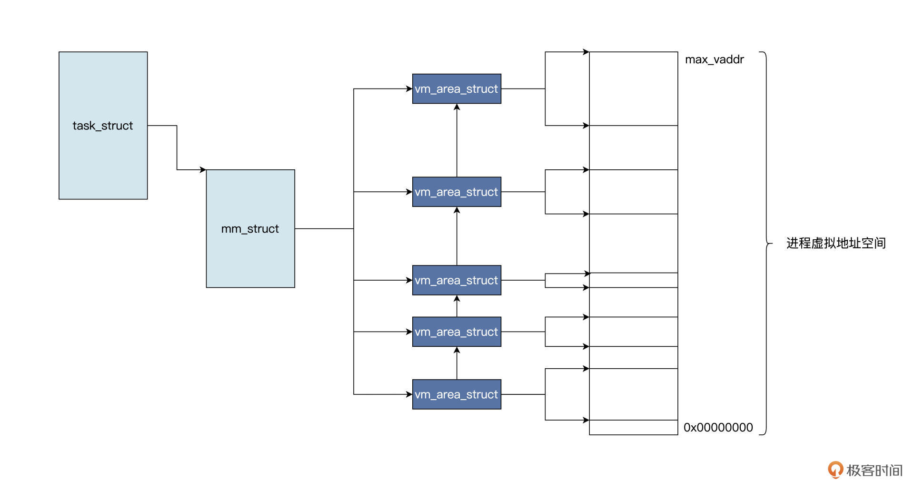
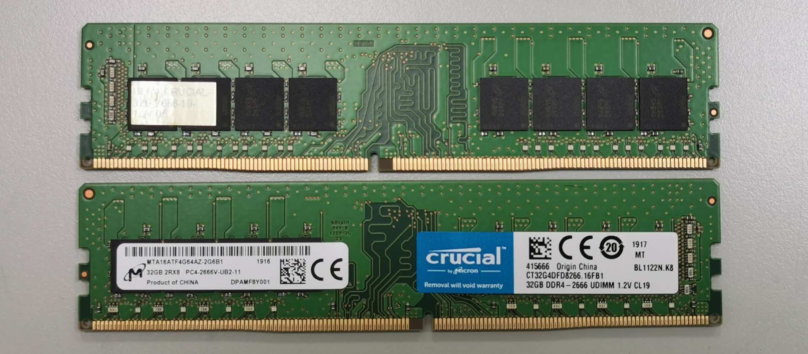
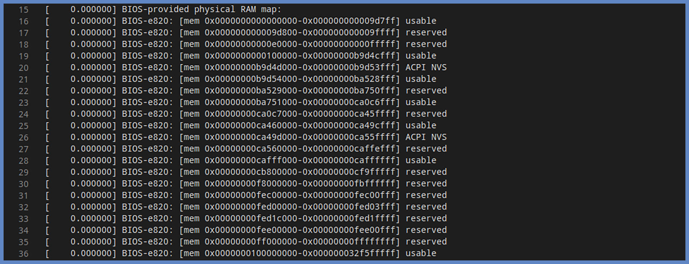

- 00 开篇词 练好基本功，优秀工程师成长第一步.md
- 01 CISC & RISC：从何而来，何至于此.md
- 02 RISC特性与发展：RISC-V凭什么成为“半导体行业的Linux”？.md
- 03 硬件语言筑基（一）：从硬件语言开启手写CPU之旅.md
- 04 硬件语言筑基（二）_ 代码是怎么生成具体电路的？.md
- 05 指令架构：RISC-V在CPU设计上到底有哪些优势？.md
- 06 手写CPU（一）：迷你CPU架构设计与取指令实现.md
- 07 手写CPU（二）：如何实现指令译码模块？.md
- 08 手写CPU（三）：如何实现指令执行模块？.md
- 09 手写CPU（四）：如何实现CPU流水线的访存阶段？.md
- 10 手写CPU（五）：CPU流水线的写回模块如何实现？.md
- 11 手写CPU（六）：如何让我们的CPU跑起来？.md
- 12 QEMU：支持RISC-V的QEMU如何构建？.md
- 13 小试牛刀：跑通RISC-V平台的Hello World程序.md
- 14 走进C语言：高级语言怎样抽象执行逻辑？.md
- 15 C与汇编：揭秘C语言编译器的“搬砖”日常.md
- 16 RISC-V指令精讲（一）：算术指令实现与调试.md
- 17 RISC-V指令精讲（二）：算术指令实现与调试.md
- 18 RISC-V指令精讲（三）：跳转指令实现与调试.md
- 19 RISC-V指令精讲（四）：跳转指令实现与调试.md
- 20 RISC-V指令精讲（五）：原子指令实现与调试.md
- 21 RISC-V指令精讲（六）：加载指令实现与调试.md
- 22 RISC-V指令精讲（七）：访存指令实现与调试.md
- 23 内存地址空间：程序中地址的三种产生方式.md
- 24 虚实结合：虚拟内存和物理内存.md
- 25 堆&栈：堆与栈的区别和应用.md
- 26 延迟分配：提高内存利用率的三种机制.md
- 27 应用内存管理：Linux的应用与内存管理.md
- 28 进程调度：应用为什么能并行执行？.md
- 29 应用间通信（一）：详解Linux进程IPC.md
- 30 应用间通信（二）：详解Linux进程IPC.md
- 31 外设通信：IO Cache与IO调度.md
- 32 IO管理：Linux如何管理多个外设？.md
- 33 lotop与lostat命令：聊聊命令背后的故事与工作原理.md
- 34 文件仓库：初识文件与文件系统.md
- 35 Linux文件系统（一）：Linux如何存放文件？.md
- 36 Linux文件系统（二）：Linux如何存放文件？.md
- 37 浏览器原理（一）：浏览器为什么要用多进程模型？.md
- 38 浏览器原理（二）：浏览器进程通信与网络渲染详解.md
- 39 源码解读：V8 执行 JS 代码的全过程.md
- 40 内功心法（一）：内核和后端通用的设计思想有哪些？.md
- 41 内功心法（二）：内核和后端通用的设计思想有哪些？.md
- 42 性能调优：性能调优工具eBPF和调优方法.md
- 先睹为快：迷你CPU项目效果演示.md
- 加餐01 云计算基础：自己动手搭建一款IAAS虚拟化平台.md
- 加餐02 学习攻略（一）：大数据&云计算，究竟怎么学？.md
- 加餐03 学习攻略（二）：大数据&云计算，究竟怎么学？.md
- 加餐04 谈谈容器云与和CaaS平台.md
- 加餐05 分布式微服务与智能SaaS.md
- 国庆策划01 知识挑战赛：检验一下学习成果吧！.md
- 国庆策划02 来自课代表的学习锦囊.md
- 国庆策划03 揭秘代码优化操作和栈保护机制.md
- 温故知新 思考题参考答案（一）.md
- 用户故事 我是怎样学习Verilog的？.md
- 结束语 心若有所向往，何惧道阻且长.md
24 虚实结合：虚拟内存和物理内存
你好，我是LMOS。
上一课中学习了内存地址空间，我们搞清楚了内存地址与地址空间的本质。
今天我们开始学习虚拟内存与物理内存。其实虚拟内存也好，物理内存也罢，我们从储存并索引数据的角度来看，内存的重要组成部分就两个：一个是地址，另一个就是储存字节单元，即能存放8个二进制位的容器。把两者合起来，我们可以将内存理解为能索引到具体储存字节单元的地址集合。
这节课我会带你解决以下三个问题：
- 虚拟内存的本质是什么？-
- 物理内存是什么，它的结构长什么样？-
- 虚拟内存如何与物理内存结合在一起，真正实现储存数据的功能？
课程配套代码你可以从这里下载。让我们带着上面的问题，正式开始今天的探索之旅吧！
虚拟内存
上节课我们了解了内存地址的产生方式，以及应用程序的链接过程，也知道了内存就是能索引到具体储存单元的地址集合。但是程序中的地址能否索引到具体储存单元呢？具体的储存单元，又是如何分配的呢？下面我们用两个问题来说明其中的原理。
第一个问题
我的第一个问题来了，应用程序中使用的地址是什么内存地址？是不是感觉情况有很多种，一时很难回答清楚？遇到这种状况不要慌，我们只要动手写一个简单的程序就可以验证。
好，我们立刻动手写一写，代码如下：
#include "stdio.h"
#include "stdlib.h"
void func_a()
{
//定义地址：0x40000000
int* p = (int*)0x40000000;
printf("内存地址:%p\n", p);
//向该地址写入数据
*p = 0xABABBABA;
printf("内存地址:%p处的值:%x\n", p, *p);
return;
}
int main()
{
func_a();
return 0;
}
上述应用程序非常简单，我们在main函数中调用函数func_a，而在函数func_a中，我们定义一个整型指针，C语言中指针就是内存地址，其地址值为0x40000000。
代码我给你存到了课程相关的工程目录中，你可以打开工程目录make一下，就会自动编译好。然后，你需要在终端下运行这个main.elf程序，首先会出现“内存地址：0x40000000”，接着会出现“段错误，程序异常退出”的提示。
出现了段错误提示，在你的预料之中么？我来解释一下，为什么会出现这种情况，这是因为我们使用了一个没有分配的地址。很显然，如果一个地址真的能索引到内存，该地址就能访问内存，除非这地址是个假地址，在内部需要某种机制进行转换才能访问内存。这个转换机制可能需要一些表或者数据结构进行控制，并且这个控制权掌握在操作系统的手里。
由于操作系统管理内存的规则，是先分配后使用，所以，我们就猜想操作系统分配内存的时候，就会处理控制地址转换的相关表和数据结构。接下来我们写段代码，来验证一下猜想，如下所示：
#include "stdio.h"
#include "stdlib.h"
void func_b()
{
//分配内存，返回其地址
int* p = (int*)malloc(sizeof(int));
if(p)
{
printf("内存地址:%p\n", p);
//向该地址写入数据
*p = 0xABABBABA;
printf("内存地址:%p处的值:%x\n", p, *p);
}
return;
}
int main()
{
func_b();
return 0;
}
这次我们编译运行，就会正确地输出结果了。
其实malloc函数在内部最终会调用Linux内核的API函数，在该进程的虚拟地址空间中分配一小块虚拟内存，返回其首地址。这个过程我用一幅图来为你展示，如下所示：

由于代码优化的原因，malloc函数并不是每次调用，都会导致Linux内核建立一个vm_area_struct数据结构。我们假定malloc函数导致Linux内核建立了一个vm_area_struct数据结构，该结构中有描述虚拟内存的开始地址、大小、属性等相关字段，表示已经分配的虚拟内存空间。
许多个这样的结构可以一起表示进程的虚拟地址空间分配情况。但是，这个从vm_area_struct数据结构中返回的地址，仍然是虚拟的、是假的，是不能索引到内存单元的，直到访问该地址时，会发生另一个故事，如下图所示：
上图中CPU拿着一个虚拟地址访问内存，首先会经过MMU，对于调用malloc函数的情况是该虚拟地址没有映射到物理内存，所以会通知CPU该地址禁止访问。
上图中1到4个步骤为硬件自动完成的，然后CPU中断到Linux内核地址错误处理程序，软件开始工作，也就是说Linux内核会对照着当前进程的虚拟地址空间，去查找对应的vm_area_struct数据结构，找不到就证明虚拟地址未分配，直接结束，进程会发出段错误；若是找到了，则证明虚拟地址已经分配，接着会分配物理内存，建立虚拟地址到物理地址的映射关系，接着程序就可以继续运行了。
当然了，实际情况比图中的复杂，这里我们只是要理清楚malloc函数的逻辑，并且明确malloc是返回的虚拟内存地址就可以了。
第二个问题
我们要想清楚的第二个问题就是，直接使用物理内存地址，会出现什么后果？我们来看一个程序，下面这段代码是一个简单版的memset函数。
void mymemset(void* start, char val, int size)
{
char* buf = (char*)start;
for(int i = 0; i < size; i++)
{
buf[i] = val;
}
return;
}
我们提出一个假设：这个函数被不同的应用程序调用，且使用的地址就是物理地址，能直接访问物理内存单元。
你可以想一想，如果假设成立，恶果就是一个程序可以改变另一个程序的内存，甚至是全部的内存。想想吧！这是何等可怕。通过这个例子，我们发现物理地址不能有效地隔离内存，达到保护内存的结果。
想要隔离内存，就需要依赖虚拟内存这个东西。我画了一幅图，带你总结一下虚拟内存的本质，如下所示：
由上图可知，我们各种应用都可以拥有从0到最大虚拟地址的完整的虚拟内存空间，并且可以任意使用这个虚拟内存空间。每个应用，都认为自己拥有整个内存，这一点可以从所有的应用程序使用相同的链接脚本进行链接得到佐证。各个应用程序调用malloc函数，可能得到相同地址，是另一个佐证。
我们现在终于知道了，虚拟地址真的只是一个整数，一系列的这种整数集合，就构成了虚拟内存空间。这个整数能索引一个字节的虚拟内存单元，但这个虚拟内存单元不会对应到真正的物理设备，因此它虽然可以独立存在，但却需要下层的物理内存作为支撑，才能实现访问和储存数据。
物理内存
上一课中，我们了解到物理地址空间是CPU地址线位宽所能表示最大整数集合，只是一个地址，它能索引物理设备，或者什么都不索引，这里的物理设备中就包括了物理内存。
下面我们来看看真实的内存长什么样，如下所示：

从上图可以看到，在 PCB 板上有内存颗粒芯片，主要是用来存放数据的。SPD 芯片用于存放内存自身的容量、频率、厂商等信息。还有最显眼的金手指，用于连接数据总线和地址总线、电源等。
其实内存应该叫 DRAM，即动态随机存储器。内存储存颗粒芯片中的存储单元是由电容和相关元件做成的，电容存储电荷的多、少代表数字信号 0 和 1。而随着时间的流逝，电容存在漏电现象，就会引起电荷不足的情况，导致存储单元的数据出错。所以，DRAM 需要周期性刷新，以保持电荷状态。
DRAM 结构比较简单且集成度很高，通常用于制造内存条中的储存颗粒芯片。我们无需过多关注内存硬件层面的技术规格标准，这里重点需要关注的是，逻辑上内存和硬件系统的连接方式和结构。
我还是画幅图来说明吧，这样方便你建立直观印象，如下图所示：

我们假定从物理地址0开始，索引的是物理内存，CPU发出的地址是虚拟地址，经由MMU转换变成物理地址，物理地址经由地址译码单元就会对应到具体的内存字节储存单元。一个字节单元能储存8个二进制位，即一个地址能对应到8个二进制位。
你可以通过dmsg命令，查看你物理机上的情况。在我的x86机器里，情况如下图所示：

从图里我们可以看到，usable类型的物理地址区间，对应的是DRAM，即内存。其它的则是保留的或者硬件设备的地址空间，这些空间程序是不能当作内存来使用的。
讲到这里，我们就明白了，逻辑上物理内存相当于几个地址上不连续的字节数组，始终有一个物理地址能索引到其中一个字节。
虚实结合
提出虚拟内存这个概念，一是为了让应用认为自己享有完整的地址空间，拥有整个内存的使用权。二是要对物理内存进行保护，即使各个应用程序都存放在物理内存之中，也不能随意访问自己的物理内存，更不能侵犯别的应用程序所占用的物理内存，不然就会出现互相改写对方内存的情况，一旦出现这样的情况后果就严重了，任何应用程序都不能正常运行了。
那接下来要考虑的问题就是，虚拟内存跟物理内存要如何对应起来？
虚拟内存必须要落实到物理内存才能真正完成工作，最简单的方案是让虚拟地址能够索引到物理内存单元，但是虚拟地址和物理地址显然不能一一对应，如果那样的话，虚拟地址等于物理地址且不受控制，这样虚拟地址就没有任何意义了。
因此，我们需要在虚拟地址空间与物理地址空间之间加一个机构，这个机构相当于一个函数：p=f(v) 。对这函数传入一个虚拟地址，它就能返回一个物理地址。该函数有自己的计算方法，对于没法计算的地址或者没有权限的地址，还能返回一个禁止访问。
这个函数用硬件实现出来，就是CPU中的MMU，即内存管理单元。CPU发出的虚拟地址首先经过MMU，MMU内部计算得出物理地址，最后用物理地址去访问内存。MMU的结构如下图所示：

上图中，展示了CPU发出的虚拟地址经过MMU转换出物理地址，进而访问内存的过程，但我们并没有弄清楚MMU是使用什么方法进行转换的，所以下面我们继续探讨MMU的地址转换过程。
你不妨想一想，把一个数据转换成另一个数据，最简单的方案是什么？当然是建立一个对应表格，对照表格进行查询就行了。MMU也是使用一个地址转换表，但是它做很多优化和折中处理。不做任何折中处理的话，这种方案是无法实施的。
你可以想象一下32位的地址空间，有4G个虚拟地址和4G个物理地址。在这种情况下，每8个字节存放两个地址数据，想要装下所有的地址，这个表有多大？应该放在哪里？查询代价有多大？所以这个方案直接pass掉。
我们现在来看看，通常情况下MMU是如何解决这个问题的，一共有三个关键环节。
首先，MMU对虚拟地址空间和物理地址空间进行分页处理，一个页大小可以是4KB、16KB、2MB、4MB、1GB不等。这是为了增加地址的粒度，避免采用每个字节一个地址，现在一页一个地址，地址数量就会大大减少，从而减少转换表的大小。
其次，MMU采用的转换表也称为页表，其中只会对应物理页地址，不会储存虚拟地址，而是将虚拟地址作为页表索引，这进一步缩小了页表的大小。
最后MMU对页表本身进行了拆分，变成了多级页表。假如不分级，4GB内存空间 ，按照4KB大小分页，有1M个页表项，每个页表项只占用4个字节，也需要4MB空间。如果页表分级，在建立页表时就可以按需建立页表，而不是一次建立4MB大小的页表。
我们一起来画一幅图来描述一下这个过程，如下所示：

对照图片我们可以看到，虚拟内存页和物理内存页是同等大小的，都为4KB，各级页表占用的空间也是一个页，即为4KB。MMU把虚拟地址分为5个位段，各位段的位数根据实际情况有所不同，按照这些位段的数据来索引各级页表中的项，一级一级往下查找，直到页表项，最后用页表项中的地址加页内偏移，就得到了物理地址。
我再画一幅图，为你描述这一过程。

看到这幅图，我们就清楚了MMU用虚拟地址转换物理地址的过程。如果转换成功就可以直接访问内存了；但如果转换失败，MMU就会通知CPU，地址转换失败，让CPU产生一个异常中断，进而通知操作系统内核，让操作系统内核来处理这个异常，就像malloc分配内存的过程那样。
我们已经知道了虚拟地址如何转换成物理地址，但是如果只是按部就班地转换可不行，别忘了，还需要对物理内存进行保护。这个保护物理内存的问题的关键就是，想清楚一个虚拟地址在什么情况下能被转换成物理地址。
这就要说到MMU是如何控制转换动作的。要进行控制就需要相关的控制信息，聪明如你，大概已经猜到了，控制信息就放在页表项中，MMU在转换过程中首先就会查看那些信息，以此作出判断。
下面我们看一下控制信息的格式，如下所示：

从上图中可以看到，页表项中的低12位为属性位段，这里保存一个物理内存页面的读写、执行、存在的相关权限，还有页面是否存在、可不可以缓存，是否已经访问或者写入，大小等信息。这些信息统统编码在12个二进制位中。
为什么表示各种页面地址的页表项，能让出12位用于编码这些信息呢？这是因为一个页面最小也是4KB且与4KB对齐，那么页面开始地址的低12位永远为0，所以可以挪为它用。
到这里，我们就已经搞清楚虚拟地址如何转换成物理地址，并且知道了MMU如何控制转换过程，恭喜你解锁了虚实结合的思路和过程。
现在你可能隐约感觉到，只要操作系统牢牢控制页表数据，就能实现对内存的完全控制和保护，使得各个应用程序在自己的虚拟地址空间中安全地运行，不被打扰，也不能打扰别人。每个应用程序都有相同的虚拟内存，但却占用着不同的物理内存。
重点回顾
今天的课程就要结束了，下面我们来回顾一下今天的内容。
首先我们从两个实际问题出发，研究了虚拟内存的本质。虚拟内存的应用，一是为了保护内存，二是为了限制访问内存。让应用程序拥有独立的地址空间，误以为自己能享用全部的内存。
接着我们分析了物理内存，了解了DRAM的特性和结构，因为DRAM就是我们常说的内存设备。这里你重点要关注的是内存的逻辑结构和系统连接方式。
最后我们讨论了虚实结合究竟是怎么实现的。硬件工程设计了MMU，让它把虚拟内存地址通过页表中的信息转换成物理地址，并控制转换过程。如果转换失败就会通知CPU，然后CPU产生地址异常中断，最后由操作系统处理这个异常。操作系统将会通过修改页表的数据来修复这个问题，进而完全控制内存的访问。
我画了一张导图梳理这节课内容，供你参考。
应用程序的虚拟地址空间里还有更多奥秘，我会在下节课继续为你展开，敬请期待。
思考题
请问页表数据究竟放在什么地方呢？
欢迎你在留言区跟我交流互动，说说你对虚实结合的认识。如果觉得这节课还不错，也推荐你把它分享给身边的朋友。
© 2019 - 2023 Liangliang Lee. Powered by Vert.x and hexo-theme-book.